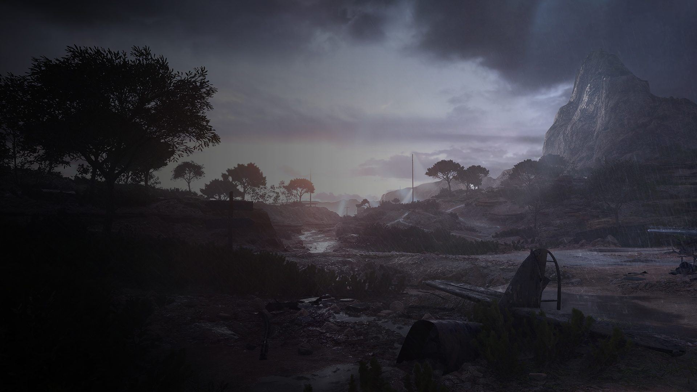

Tahun 1939, dunia terjerumus ke dalam konflik terbesar dalam sejarah umat manusia. Perang Dunia II dimulai, menyeret berbagai negara ke dalam kekacauan dan kehancuran.
Dalam Prologue Battlefield V, pemain tidak hanya melihat perang dari satu sudut pandang, tetapi dari banyak tentara yang berjuang di medan tempur berbeda. Setiap langkah adalah perjuangan untuk bertahan hidup.
Dentuman artileri, hujan peluru, dan teriakan di medan perang menjadi pembuka kisah yang menggambarkan betapa brutalnya perang.

"War is not about glory. It is about sacrifice."